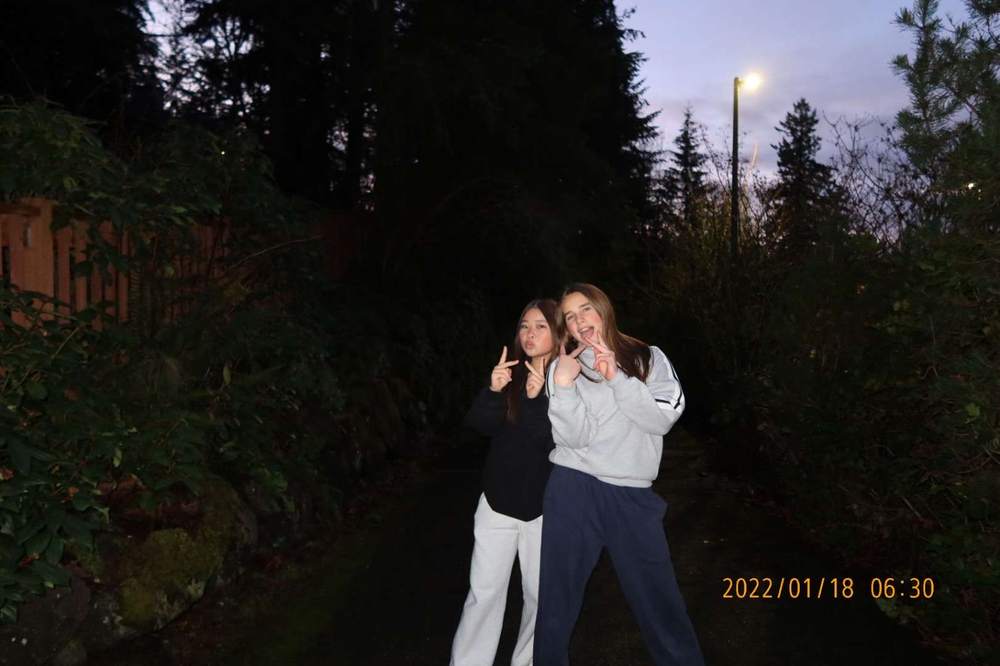
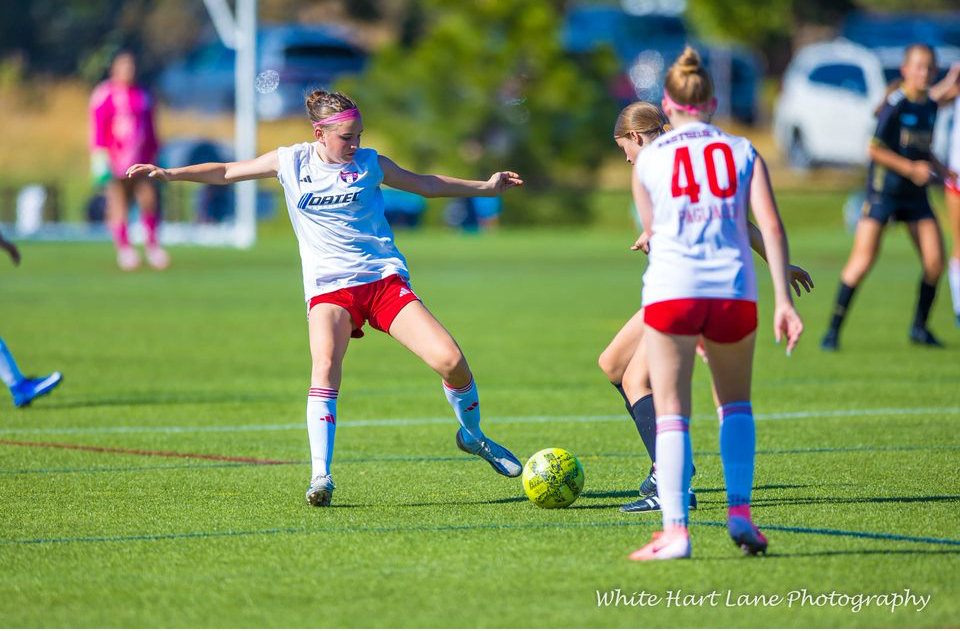

About Me
Hi! My name is Grace, and I'm an adventurous, kind, and curious person. I have a wonderful family, amazing friends, and many interests that make life exciting!
My Family
I have three awesome siblings who always keep things fun and exciting. We love spending time together, whether we’re playing games, hiking, or just hanging out. I also have a loyal dog named Remy, who follows me everywhere!
My Interests
- Sports: I play both basketball and soccer. I love being active and working with my teammates to win games!
- Hiking: Exploring nature and going on adventures is one of my favorite things to do.
- Baking: I enjoy making cookies and trying out new recipes in the kitchen.
- Coding: I'm currently learning how to code, and I love solving problems and creating new projects!
My School
I go to an awesome school where I get to learn new things every day. My favorite subjects are math and science because I enjoy problem-solving and discovering how things work.
Future Goals
When I grow up, I have two big dreams:
Thanks for getting to know me! I can’t wait to see where life takes me.
